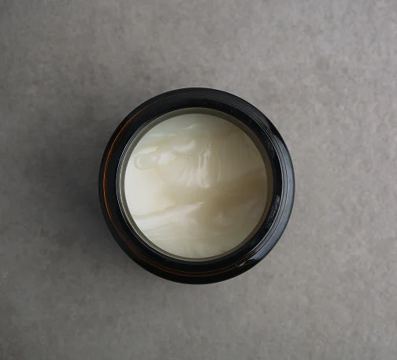

Knowing your skintype is essential for good skincare
Dry Skin
- Your face feels tight after cleansing, even before applying moisturizer.
- Your skin often looks dull, rough, or flaky.
- You get itchiness or irritation easily.
- Fine lines show up more when skin is dehydrated.
- Makeup may look patchy or settle into dry spots.
Oily skin
- Your skin looks shiny or greasy, especially on the T-zone which is you forehead, nose and chin.
- Enlarged or visible pores, often around the nose and cheeks.
- Frequent blackheads, whiteheads, or acne breakouts.
- If you wear makeup it can tend to slide off or maybe it doesnt last long.
- Skin feels oily again just a few hours after cleansing.
Combinated skin
- You feel oily in the T-zone which is your forehead, nose and chin but you feel normal or dry on the cheeks.
- Pores look larger in the T-zone, but smaller elsewhere.
- You are prone to blackheads or breakouts on oily areas, but flakiness on dry areas.
- If you wear makeup it may look greasy on the T-zone but patchy or tight on the cheeks.
- Skin will feel overall imbalanced, some spots will appear shiny, others rough or tight.

Normal skin
- Your skin feels balanced. Not too oily and not too dry.
- You will have even texture and smooth to the touch.
- You will have a few visible pores.
- Rarely experiences breakouts, flakiness, or irritation.
- Healthy, natural glow without much shine.